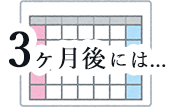

Web Coder
Gosei
Gosei
Nakazono
Sound
Scroll
About
Gosei Nakazono
Profile
福岡県出身、埼玉県在住。2020年12月、Web制作の魅力に取り憑かれコーディングを中心に猛勉強開始。Webクリエーターが集まるコミュニティに参加したり、mentaのメンターサービスを活用しながら積極的にスキルをつける。
また、DJの大会では6度の優勝、世界大会出場を果たすなど異色の経歴を持つ努力家。ビートメーカーとしても音源をリリースするなど、音楽を通じて多くのクリエーターと関わり作品を創り続けている。
Interlest
楽曲制作、音楽鑑賞、お笑い、K-1観戦
About
Vision
意気込み
Webコーダー志望。入社後は実務を重ね、
適切なマークアップや、デザインを忠実に再現するなど、
丁寧なコーディングを心掛け、極めます。
その後はWebデザインスキルを習得し、
仕事の幅を広げ、受け身ではなく自ら提案し、
責任を持って最後までやり遂げます。
入社後の成長計画

- 適切なマークアップができる
- 全体的な業務の流れや社内ルールを把握しておく
- WordPressやコーディングの実務に慣れる
- 効率化を意識、コーディングの質やスピードアップ
- 全体的な工程をいかに円滑に進めれるかを考え行動できる
- Webデザインの勉強にも力を入れる
- 難しいコーディングも安心して任せられる
- お客様の目的を達成する為のよりよい提案ができる
- Webデザインもある程度できる
- Webデザインの質やスピードアップ
- 難易度の高い案件でも、安心のスピード感で
任せられるコーダー兼Webデザイナーになっている
Vision
Skills
コーディング
デザインを忠実に再現し、保守性の高いコーディングを日々追求しています。jQueryを使ったWebサイトでよく見るパーツの実装も可能です。
HTML, CSS, SASS,
JavaScript (jQuery),
Git/GitHub
レスポンシブ対応
スマートフォンやタブレットの画面サイズでも、表示崩れのないように丁寧に対応させていただきます。
デザインツール
画像書き出しや、各種値の取得など、コーディングの実務で必要な操作方法は一通り理解しています。
Photoshop, XD,
Illustrator
Skills
Works
詳細
- 担当：Writing, Design, Coding
- 制作期間：1ヶ月
- 使用言語：HTML, CSS, SASS, JavaScript (jQuery)
- デザインツール：Photoshop, Illustrator
実装パーツ
音楽再生/停止ボタン（フェードイン/アウト、スマホ幅のみ非表示）、ドロワーメニュー、スムーズスクロール、スライダー（Swiper）で自動再生、ふわっと表示（AOS）、お問い合わせフォーム（バリデーション）、スクロールしたらheader変化、トップへ戻るボタン
詳細
- 担当：Coding
- 制作期間：20日間
- 使用言語：HTML, CSS, SASS, JavaScript (jQuery)
- デザインツール：XD
実装パーツ
ハンバーガーメニュー、スライダー（Slick）でフェードイン / アウト＆ズームイン 、タブ切り替え、ふわっと表示（AOS）、パンくずリスト、宿泊予約モーダル（flatpickr、バリデーション）、スクロールしたらheader変化

詳細
- 担当：Coding
- 制作期間：20日間
- 使用言語：HTML, CSS, SASS, JavaScript (jQuery)
- デザインツール：XD
実装パーツ
ハンバーガーメニュー、スライダー（Swiper）で自動再生 、ふわっと表示（AOS）、アコーディオンメニュー、スムーズスクロール、お問い合わせフォーム（バリデーション）
詳細
- 担当：Coding
- 制作期間：12日間
- 使用言語：HTML, CSS
- デザインツール：XD
Works
Input & Output
Contact
最後までご覧いただき
ありがとうございます。
なにかご質問などありましたら
お気軽にご連絡お待ちしております。